|
Данный программный продукт предназначен для моделирования работы автозаправочных станций(АЗС). Где под АЗС понимается комплекс оборудования на придорожной территории, предназначенный для заправки транспортных средств традиционными сортами углеводородного топлива, – бензином и дизельным топливом (бензозаправочные станции).
Содержание справки
Получение топологии
Для выполнения процесса моделирования необходима корректно построенная топология АЗС.
Получить её можно 2-мя способами:
Создать новую топологию путем выполнения команды "Файл -> Создать" (или с помощью сочетания клавиш Ctrl+N); (Подробнее про создание..) Загрузить ранее созданную топологию путем выполнения команды "Файл -> Открыть" (или с помощью сочетания клавиш Ctrl+O);(Подробнее про загрузку..)
(Назад в содержание..)
Создание топологии
Для создания новой топологии необходимо выполнение команды "Файл -> Создать", нажатие сочетания клавиш Ctrl+N или нажатие левой кнопкой мыши на значке .
В окне Настройки (Рисунок 1) необходимо указать размер поля, которое будет использовано при конструировании топологии.
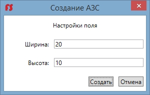
Рисунок 1. Настройка параметров топологии
При задании параметров Ширины и Высоты следует руководствоваться следующими ограничениями:
минимальная Ширина АЗС – 20 клеток; максимальная Ширина АЗС – 30 клеток; минимальная Высота АЗС – 10 клеток; максимальная Высота АЗС – 20 клеток;
Задание параметров завершается нажатием кнопки "Создать". Если параметры были введены корректно - откроется окно размещения шаблонов (Рисунок 2). В случае некорректного ввода параметров - пользователь будет предупрежден об этом всплывающим окном, будет предоставлена возможность повторного ввода параметров.
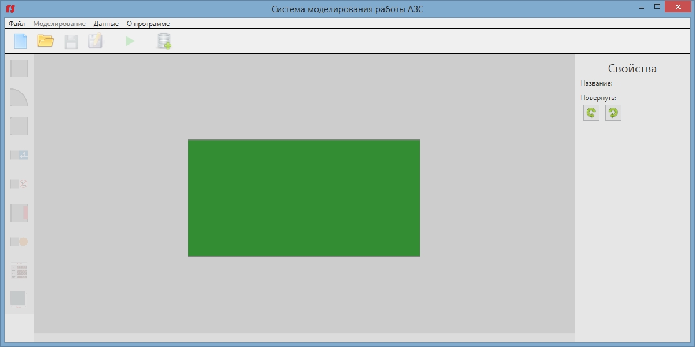
Рисунок 2. Окно размещения шаблонов
(Назад в содержание..)
Конструирование топологии
Доступные для размещения шаблоны расположены в левой части окна. При выборе одного из шаблонов, в правой части окна на панели Свойства (Рисунок 3) будут отображены его характеристики и возможные действия с шаблоном.(Подробнее про шаблоны..)
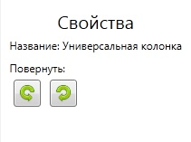
Рисунок 3. Панель свойств шаблонного объекта
Некоторые шаблонные объекты можно поворачивать. Поворот объекта осуществляется путем нажатия соответствующих кнопок ( и ) в панели Свойства (Рисунок 3) или путем вращения колесиком мышки.
Добавление шаблонного объекта на рабочее поле осуществляется путем нажатие на свободную клетку рабочего поля левой кнопкой мыши, с выбранным типом шаблона. Если добавление объекта по какой-либо причине невозможно, пользователь будет предупрежден об этом всплывающим окном.
Удаление шаблонного объекта с рабочего поля осуществляется путем нажатия на ранее добавленный шаблон правой кнопкой мыши.
Некоторые шаблоны при добавлении ожидают задания им опредпленных параметров(пр. лимит кассы у шаблона "Касса"). Сделать это возможно в панели Свойства (Рисунок 3) перед добавлением объекта шаблона в проект или при последующем выделении объекта левой кнопкой мыши.
(Назад в содержание..)
Открытие топологии
Для загрузки до этого созданной топологии необходимо выполнение команды "Файл -> Открыть", нажатие сочетания клавиш Ctrl+O или нажатие левой кнопкой мыши на значке  . .
В появившемся окне файлового менеджера (Рисунок 4) необходимо указать путь к ранее сохраненной топологии и нажать кнопку Открыть. Если файл, по какой-либо причине не может быть открыть, пользователь будет предупрежден об этом всплывающим окном.
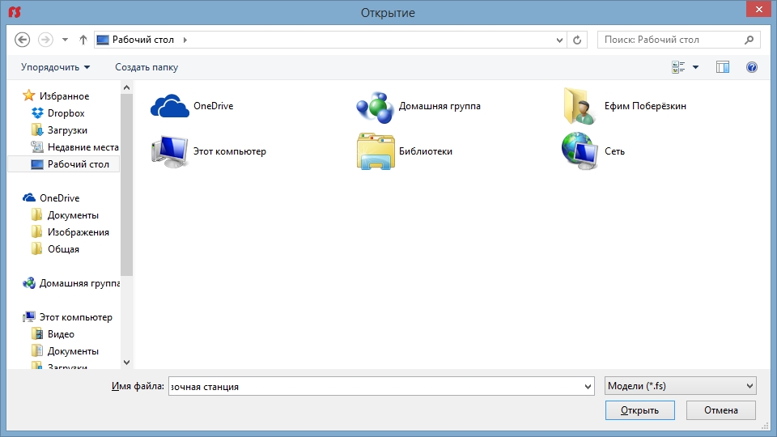
Рисунок 4. Окно файлового менеджера для загрузки модели
(Назад в содержание..)
Шаблоны топологии
Для построения топологий в продукте представлены шаблоны, как средство их создания. Они имеют графическое представление и могут быть размещены на рабочем поле. При добавлении шаблона создается уникальный объект, которому можно задать определенные видом порождающего шаблона свойства. Далее приведен список шаблонов, с указанием ограничений по количеству порождаемых ими объектов и передаваемых объектам параметров.
Простая дорога Шаблон для проложения дороги на территории АЗС. Количество объектов данного шаблона в модели ограничено размерами рабочего поля. Может быть повернут.
Дорога с ответвлением Шаблон для проложения дороги на территории АЗС. Количество объектов данного шаблона в модели ограничено размерами рабочего поля. Может быть повернут. Используется для создания дорожных ответвлений.
Поворот Шаблон для проложения дороги на территории АЗС. Количество объектов данного шаблона в модели ограничено размерами рабочего поля. Может быть повернут. Используется для создания поворотов.
Въезд Шаблон для создания въезда на территорию АЗС с магистрали. Количество объектов данного шаблона в модели ограничено 1 (одним) экземпляром. Не может быть повернут.
Выезд Шаблон для создания выезда на территорию АЗС с магистрали. Количество объектов данного шаблона в модели ограничено 1 (одним) экземпляром. Не может быть повернут.
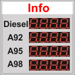 Информационное табло Шаблон для создания информационного табло на территории АЗС. Количество объектов данного шаблона в модели ограничено 1 (одним) экземпляром. Может быть повернут. Объект данного шаблона не несет функциональной нагрузки в рамках текущего проекта, но позволяет более полно описать топологию АЗС.
Колонка Шаблон для создания универсальной колонки на территории АЗС. Количество объектов данного шаблона в модели ограничено размерами рабочего поля. Автомобиль может быть заправлен при условии его попадания на поле колонки, в независимости от направления движения.
Резервуар с топливом Шаблон для создания резервуара с топливом на территории АЗС. Количество объектов данного шаблона в модели ограничено 4 (четыремя) экземплярами. Резервуар может содержать настраиваемое количество определенного топлива.
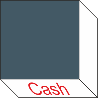 Касса Шаблон для создания кассы на территории АЗС. Количество объектов данного шаблона в модели ограничено 1 (одним) экземпляром. Касса может хранить настраиваемую сумму денег. После превышения порога - вызывается инкассатор.
(Назад в содержание..)
Сохранение топологии
Сохранение топологии производится путем выполнения команды "Файл -> Сохранить" или "Файл -> Сохранить как". После выполнения команды "Файл -> Сохранить" топология будет перезаписана в месте своего хранения. Если же после выполнения команды "Файл -> Сохранить" у топологии не обнаружено место её хранения или была выполнена команда "Файл -> Сохранить как" то откроется окно файлового менеджера (Рисунок 5). В появившемся окне необходимо указать желаемый путь для сохранения топологии и нажать кнопку Сохранить.
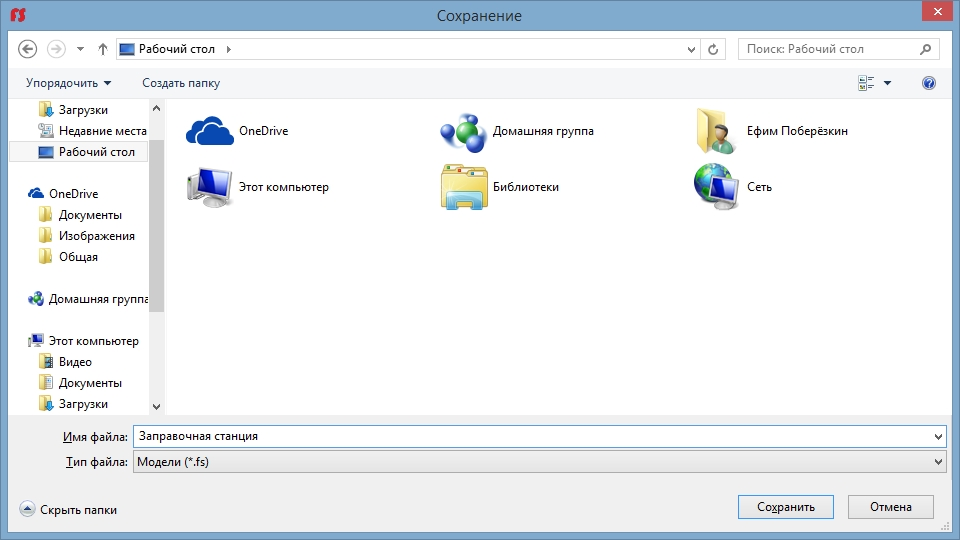
Рисунок 5. Окно файлового менеджера для загрузки модели
(Назад в содержание..)
Моделирование
Для запуска процесса моделирования необходимо щелкнуть левой кнопкой мыши на пункте меню Моделирование, или на значок ().
Откроется окно моделирования (Рисунок 6).
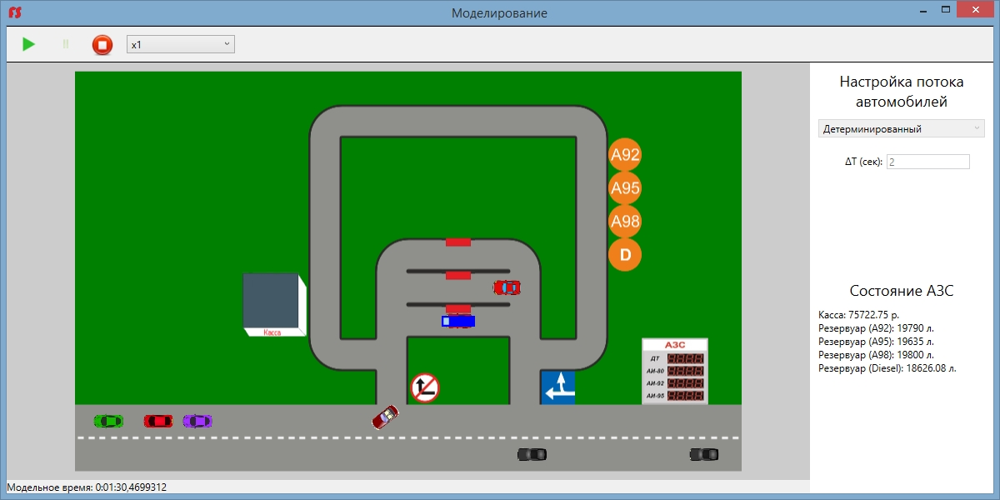
Рисунок 6. Пример моделирования для корректно построенной топологии
Перед запуском процесса моделирования необходимо задать параметры потока автомобилей. Сделать это возможно на панели "Настройки потока" (Рисунок 7).
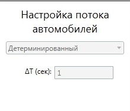
Рисунок 7. Панель "Настройка потока"
В выпадающем меню можно выбрать тип потока. Параметры потока будут динамически отображаться на панели, в соответствии с выбранным пунктом выпадающего меню. На значения параметров потоков действуют ограничения, приведенные ниже:
Детерминированный Поток при котором каждая очередная машина появляется через фиксированное время dt.
Ограничения:
Нормальный Поток при котором каждая очередная машина появляется через случайное время, получаемое с помощью генератора случайных чисел, работающего по нормальному закону распределения с параметрами mx и dx.
Ограничения:
mx >= 2 mx <= 100 mx >= dx^0.5
Показательный Поток при котором каждая очередная машина появляется через случайное время, получаемое с помощью генератора случайных чисел, работающего по показательному закону распределения с параметром y.
Ограничения:
Равномерный Поток при котором каждая очередная машина появляется через случайное время, получаемое с помощью генератора случайных чисел, работающего по равномерному закону распределения с параметрами a(нижняя граница) и b(верхняя граница).
Ограничения:
После корректного задания потока автомобилей становится возможен запуск процесса моделирования. Для запуска процесса морделирования необходимо щелкнуть левой кнопкой мыши по значку Моделирование().
Запустится процесс моделирования.
Процессом моделирования можно также управлять с помощью:
 - для приостановки процесса моделирования. - для приостановки процесса моделирования.
- для остановки процесса моделирования.
- для продолжения процесса моделирования в случае его предшествующей приостановки.
Пользователь также может управлять скоростью моделирования с помощью панели Настройка скорости(Рисунок 8).
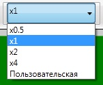
Рисунок 8. Панель "Настройка скорости"
(Назад в содержание..)
Работа с базой данных
Для работы с сущностью "Автомобиль" щелкните по иконке БД или выберите пункт меню Данные - Автомобили.
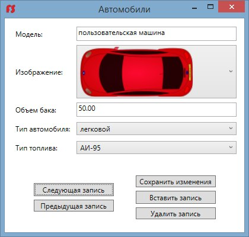
Рисунок 9. Окно "Автомобили"
Чтобы переходить по записям, используйте кнопки "Следующая запись" и "Предыдущая запись".
Чтобы изменить данные текущей записи, поменяйте значения полей ввода и выпадающих списков на желаемые.
Чтобы сохранить внесенные изменения, нажмите кнопку "Сохранить изменения".
Чтобы вставить новую запись, нажмите кнопку "Вставить запись".
Чтобы удалить текущую запись, нажмите кнопку "Удалить запись".
Для выхода из окна "Автомобили" нажмите крестик в правом верхнем углу окна.
Для работы с сущностью "Топливо" выберите пункт меню Данные - Топливо.
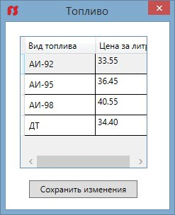
Рисунок 10. Окно "Топливо"
Чтобы изменить данные записей о цене топлива, поменяйте значения полей ввода на желаемые.
Чтобы сохранить внесенные изменения, нажмите кнопку "Сохранить изменения".
Для выхода из окна "Топливо" нажмите крестик в правом верхнем углу окна.
(Назад в содержание..)
|